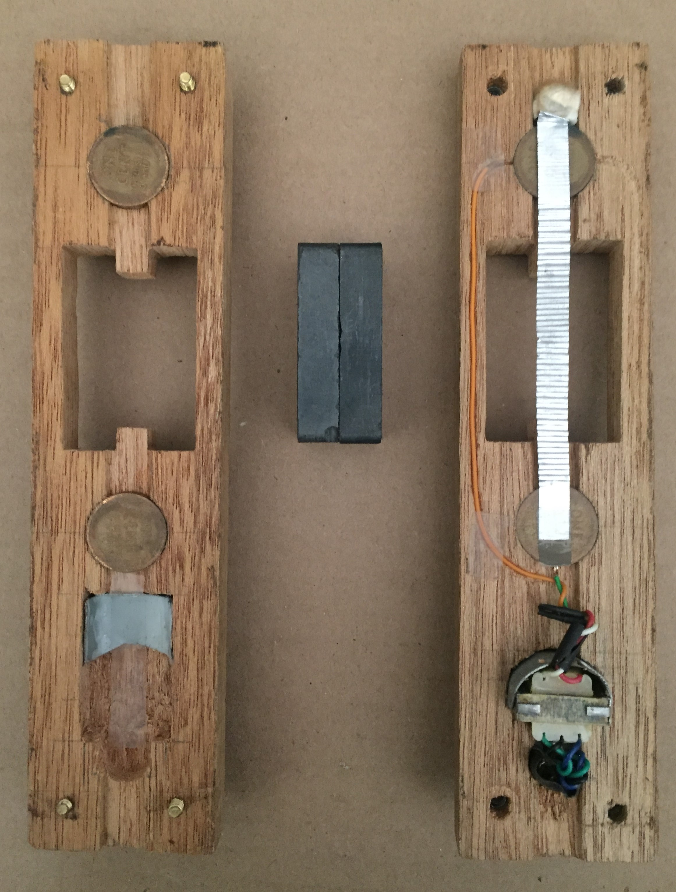
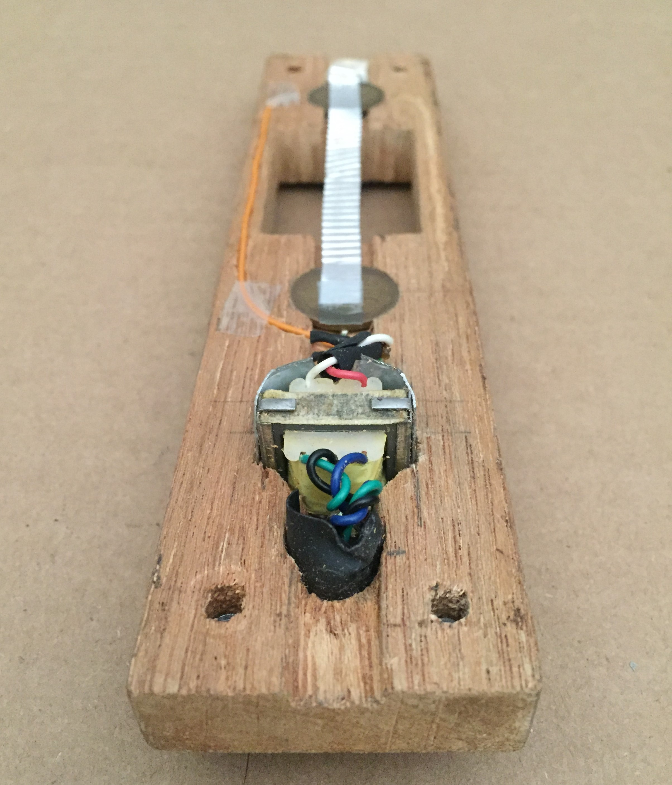

The first Newman: Newman 1

This one I made when I was but a child, and as such there are some funny silly things about it. It has very low output and it buzzes like crazy, but it looks AMAZING, and it smells nice. Let's look inside.
All the parts laid out. I hope you notice that the ribbon clamps are made from pennies. Also, that ribbon is pretty thick - its just household aluminum foil that I sliced with a razor and ran between two peanutbutter jar lids to make it corrugated like that.
Detail of the "transformer shielding". I had heard about something called shielding on the internet, and thought the scraps of sheet metal that don't entirely enclose the transformer would work. Of course, this could very well be acting as a microwave frequency waveguide instead of a faraday cage.